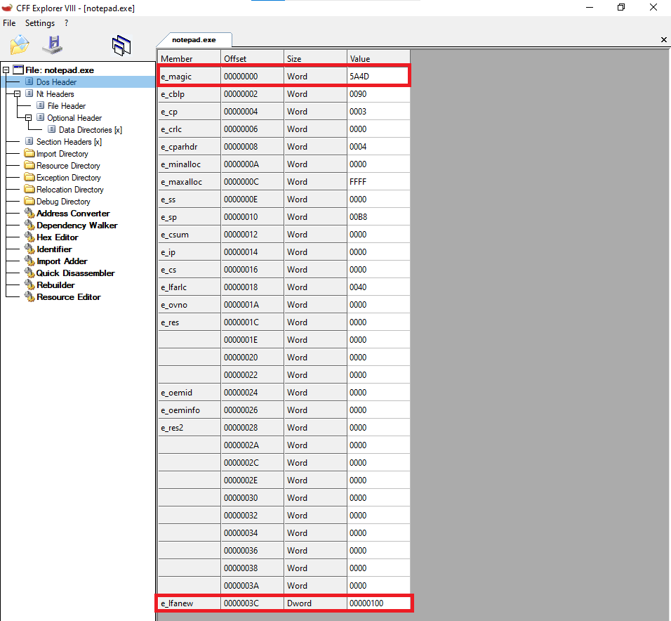
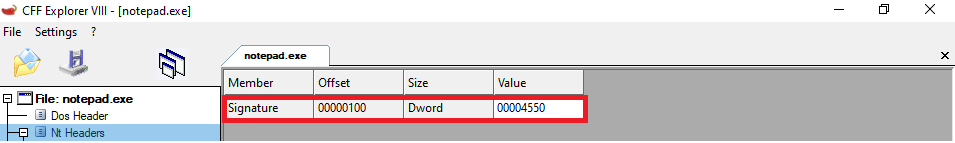
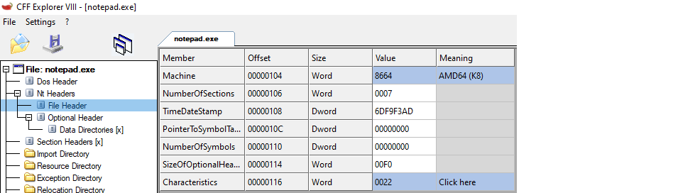
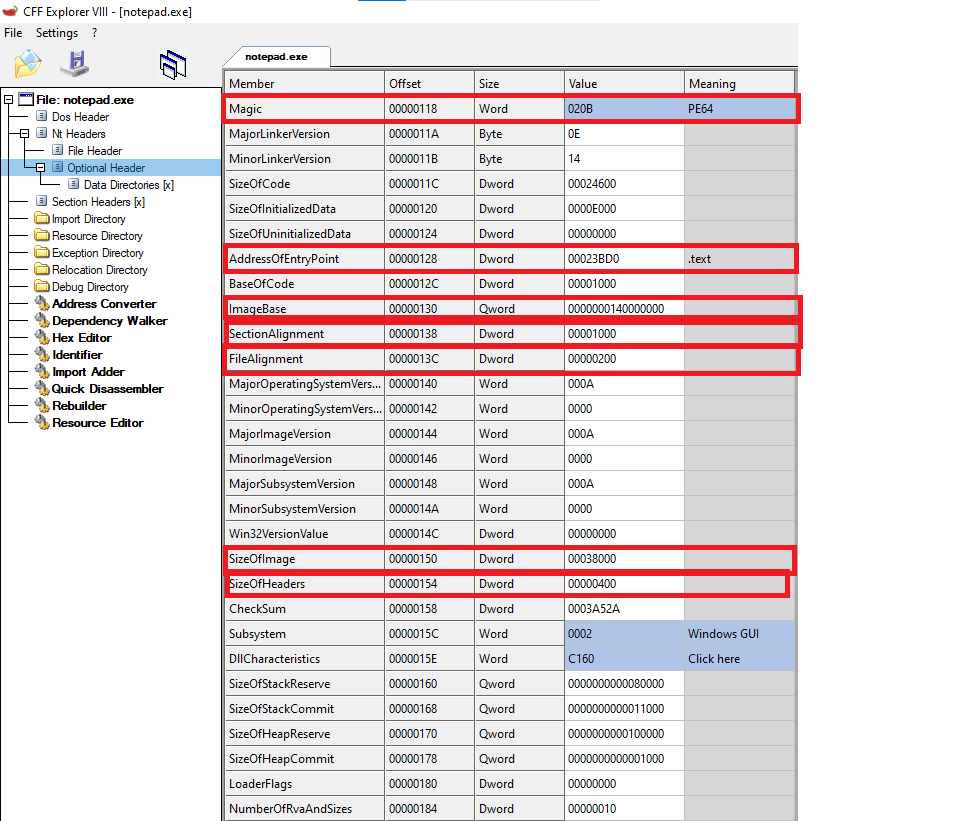

KhoaLeDang's Blog
PE HEADER
TOOL USED: CFF_EXPLORER; APP USED: notepad.exe
Hi, this is my first blog and today we will talk about PE format. PE (PORTABLE EXECUTABLE) is a file format that provides information about a file for the WindowsKernal. Then WindowsKernal will use that information to load the file on the RAM, the information include: size of the code, offset of each sections, Entry point of the program, ...

First part of the PE format is DOS HEADER. Its main purpose is to act as a standard identifier. Containing the "MZ" signature that marks the file as an executable. The most important field is e_lfanew, which is the offset to the NT header. It also serves the purpose of backward compatibility with the old DOS file format (when the program is loaded in MS-DOS, the default error message is “This program cannot be run in DOS mode.”).
The second part is NT_HEADER. NT_HEADER got three smaller section (signature, File header, optional header).

SIGNATURE: The role of this section is to confirm that the format behind it is a valid PE format

FileHeader:
- 1. Machine: Is the OS 32 bit or 64 bit.
- 2. NumberOfSections: Numbers of Sections in the SectionHeader.
- 3. TimeDateStamp: The day the file got compiled.
- 4. PointerToSymbolTable: offset to Symbol usually used for .obj file(value = 0 for .exe and dll)
- 5. SizeOfOptionalHeader: Size of Optional Header is used when we have the base offset of the optionalHeader. Then we plus it with the sizeofOptionalHeader to know where it ends.
- 6. Characteristics: Let Windows Kernal knows that this file is a .exe or .dll

OptionalHeader
-> Thats all for today see you in the next Blog.